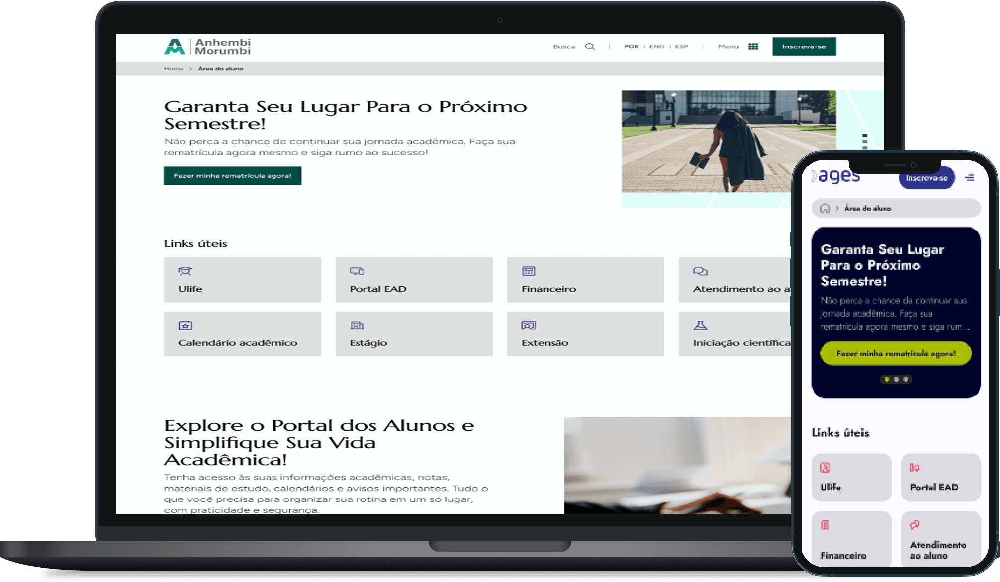
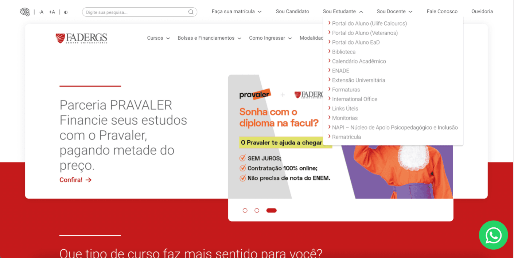
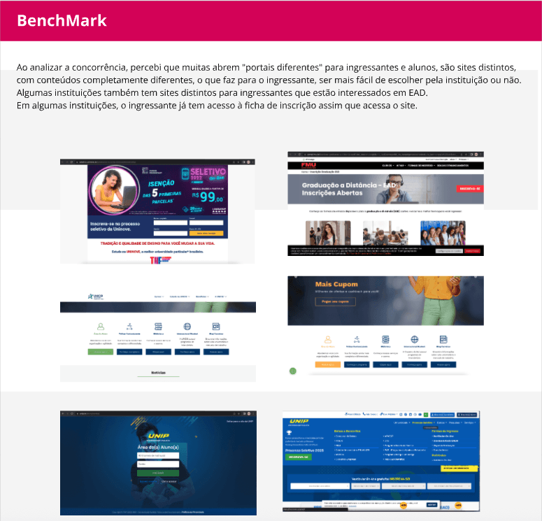
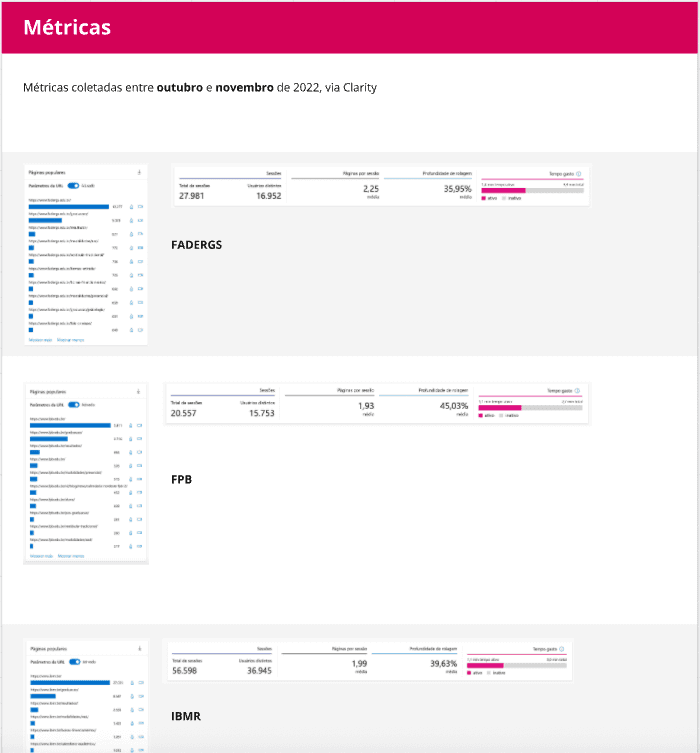
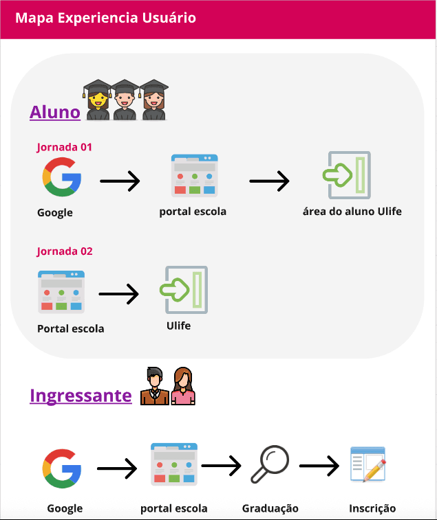
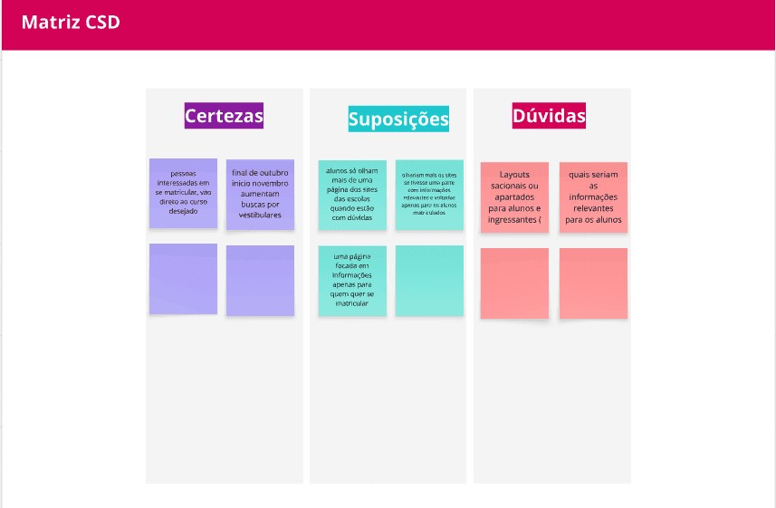

Education · Student services · Ânima Educação
Exclusive Student Area
A clearer entry point to academic services across Ânima’s student ecosystem.

A direct path to everyday student needs
As part of Ânima Educação’s Martech team, I worked on a student area designed to make academic information easier to reach across 18 education brands.
Put essential services within reach
Academic information was fragmented and difficult to reach. A 0.25% retention in the student area rate highlighted the challenge; students needed a faster route to billing, academic calendars and internship opportunities.
Baseline & outcomes
Prioritizing what students need most
I led design from research through delivery with a multidisciplinary team. Clarity and Google Analytics helped map friction, while competitive benchmarking and quantitative student research clarified which information mattered most.
Selected screens
Student services, easier to reach.
Selected visuals from the original project.







A clearer starting point for student services
Validated information architecture informed the user flows and wireframes. Student usability sessions surfaced the need for a graduation calendar, and the final layouts fed into Ânima’s internal New Portals initiative. After launch, the rate of direct access was 54%.
Back to homeNext case · Education · Subscription strategy